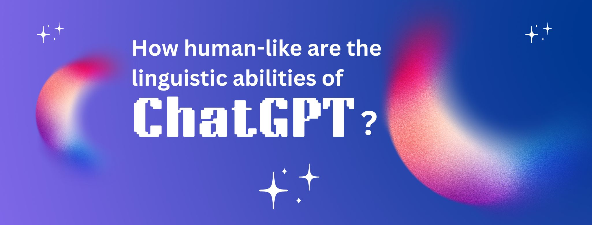
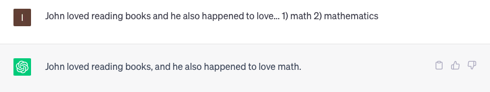
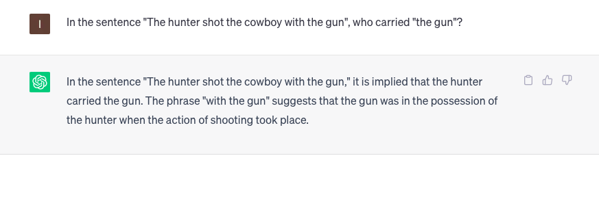
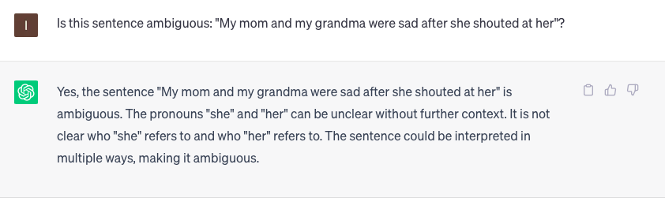

Tags: chatgpt, linguistics, hci

The arrival of ChatGPT at the end of last year has sparked a debate about how it could impact several different fields, ranging from education, to content creation, to finance and to many others. This NLP tool is the epitome of generative AI, a type of technology that “generates” content, hence the name, after being trained on large amounts of data. In this case, text data.
From a linguistic perspective, it’s exciting to see how ChatGPT outputs seem natural and convincing, leading many to assert that it behaves in a human-like way. But, how “human-like” is ChatGPT really?
Human language does not only consist of chunks of words that are combined to form sentences that express some meaning. It’s more than that. In fact, language is produced through a series of mental processes that are unique to humans and which are modulated by world knowledge, beliefs, proficiency level, mood, and many other factors. The subfield of psycholinguistics is in charge of uncovering these interesting phenomena, and many psycholinguistic studies have been conducted in the last months trying to find out whether ChatGPT actually performs in a human-like way.
In this blog post, I review some of the findings in terms of lexicon, syntax, and semantics, which are considered the building blocks of language.
A “lexicon” is a language’s inventory of words (aka. vocabulary). A challenge for NLP is ambiguity, which can occur when a single word can have two or more meanings. For example, the word “post”, in English, can mean “mail” or can be used in a work environment with the meaning of “position”. A common finding in psycholinguistic studies is that humans experience something called word meaning priming. That is, speakers would interpret the word “post” with the meaning of “position” (and not “mail”) after reading or hearing the word “job”. Basically, speakers are influenced or primed from the context. Recently, a group of researchers discovered that ChatGPT also experiences word meaning priming, which suggests that it uses context in a similar way humans do.
However, another study showed that ChatGPT is not as good with context as humans when it comes to using words. In this other study, researchers looked at whether ChatGPT used clipping in the same way humans do. Clipping happens when speakers drop one or more syllables of a word to make it shorter. For example, when we say “math” instead of “mathematics”. Based on previous studies, speakers tend to use clipping more often when the context clearly predicts the meaning of the clipped word. In this regard, if two people are having a conversation where words such as “calculus”, “algebra”, “multiplication”, among others, show up, speakers are more likely to use a clipped word like “math” instead of “mathematics”. If, on the other hand, speakers are talking about something completely unrelated, they are more likely to use the full form of the word (“mathematics”, in this case). When researchers tested ChatGPT, they found that it did not align with human behavior.

Syntax refers to the set of rules that speakers use to combine words into sentences. As with the lexicon, syntax is also subject to various phenomena that take place when speakers interact. In this regard, syntactic ambiguity occurs when a speaker produces a sentence that has two or more possible meanings. For example, the sentence “the hunter shot the cowboy with the gun” does not specify who had the gun: was it the hunter or the cowboy? Based on psycholinguistic research, speakers tend to interpret the last noun as the one modified by the phrase. In this case, “the cowboy”. Surprisingly, a recent study has shown that ChatGPT has a preference towards modifying the first noun instead (“the hunter”).

Again, it seems that from a syntactic point of view, ChatGPT does not perform in a human-like way.
Ambiguity is also frequent in semantics, which deals with meaning in language. A well-studied semantic phenomenon is co-reference resolution, something that occurs when a pronoun can refer to two or more nouns and is thus ambiguous. For instance, in the sentence “my mom and my grandma were sad after she shouted at her”, it is unclear who shouted at who, since the two nouns are feminine: “my mom” and “my grandma”. In cases like this, it seems that ChatGPT is able to detect the ambiguity and provide the user with a short explanation, which suggests that it might not be as challenging as it may seem.

Nevertheless, this apparent accuracy is overridden in cases where the sentence introduces a gender bias. For example, in the sentence “the manager hired the secretary because she was overwhelmed with work”, ChatGPT determines that “she” refers to “the secretary” and not to “the manager”. However, when “she” is replaced by “he” in the original sentence (as in “the manager hired the secretary because he was overwhelmed with work”), ChatGPT determines that “he” clearly refers to “the manager”. This bias could be explained by understanding that ChatGPT has been trained on language data that contain these implicit associations. Thus, this does not mean that ChatGPT is biased, but rather that the data it was trained on were biased.
Overall, ChatGPT seems to be more human-like than early NLP tools, as it deals with complex linguistic issues such as ambiguity in a more natural way. However, ChatGPT is still far from showing human-like performance at all linguistic levels (at least ChatGPT-3, the version used in the studies described above). Likewise, it’s also important to point out that most of these recent psycholinguistic studies have been conducted in English, the language ChatGPT is most familiar with (based on the datasets it was trained on). Therefore, it’s quite likely that performance in other languages is even less accurate.
In any case, and given the relevance of this NLP tool, I'm confident that ChatGPT will continue evolving and it will improve with time, such that ambiguities and biases are better dealt with.